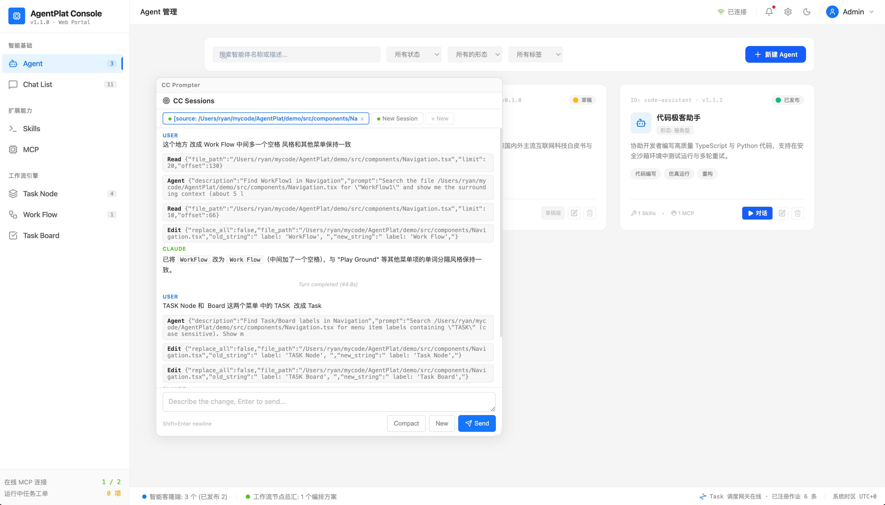

CC Prompter
哪里不对点哪里，So easy！ — Shift+Alt 点击页面元素 → 弹出 Claude Code 面板 → 描述修改 → 代码自动改 → 页面自动刷新。支持 Vite 和 Next.js，一行配置搞定
点击即定位源码行列号
一个点击搞定所有上下文
边看边改，体验拉满
多任务同时进行
正在修改 Button.tsx:12 ...
border-radius: 999px;
background: #3b82f6;
Done. HMR 刷新中...

01安装与配置
macOS / Linux 开箱即用。Windows 需要额外安装 PTY 原生模块。
macOS / Linux
npm install cc-prompter
开箱即用 ✅ PTY 模块（node-pty-prebuilt-multiarch）自动安装，无需额外操作。
Windows
npm install cc-prompter # 然后： cd node_modules/cc-prompter npm install @homebridge/node-pty-prebuilt-multiarch --ignore-scripts
# 从 GitHub Releases 下载 win32-x64 的 prebuild 压缩包： # https://github.com/nicabar/node-pty-prebuilt-multiarch/releases # # 如果 GitHub 下载超时（国内网络），使用镜像： # https://ghfast.top/https://github.com/nicabar/node-pty-prebuilt-multiarch/releases/download/...
# 将下载的压缩包解压，把 .node 文件放到： # node_modules/@homebridge/node-pty-prebuilt-multiarch/build/Release/
Node 18 / 20 / 22 均支持。PTY 包的 npm 预编译不含 Windows 平台，需要从 GitHub Releases 手动获取二进制文件。如果 GitHub 不可访问，可用 ghfast.top 等镜像加速下载。
Vite 配置
// 就这一行插件配置，搞定 code-inspector + PTY sidecar + 脚本注入 import { ccPromptPlugin } from 'cc-prompter'; export default defineConfig({ plugins: [ ccPromptPlugin(), // ← 零配置 react(), ], });
Next.js 配置
// 使用 withCcPrompt 包装你的 Next.js 配置即可 const { withCcPrompt } = require('cc-prompter/next'); module.exports = withCcPrompt()({ // ... 正常 Next.js 配置 });
支持 Pages Router + App Router（webpack 模式）。Turbopack 暂不支持。
零代码侵入 — 无需修改任何页面或 layout 文件。
Webpack 配置
// 适用于任意 webpack 项目 — 标准 Plugin 类 const { CcPromptWebpackPlugin } = require('cc-prompter/webpack'); module.exports = { plugins: [ new CcPromptWebpackPlugin(), // 仅 dev 模式生效 ], };
通用 webpack 插件，自动完成 sidecar 启动 + code-inspector + 脚本注入。
默认 NODE_ENV !== 'production' 时激活。
npm run dev
一键安装提示（给 Claude Code 用）
🎯 复制以下提示词 → 粘贴给 Claude Code
在你的前端项目中，让 Claude Code 自动完成安装和配置（包含 Mac 和 Windows 的完整步骤）：
前提：本地需要已安装 Claude Code CLI（claude 命令可用）。插件仅在 dev 模式生效，npm run build 不会注入任何代码。
02交互指南
面板触发、隐藏、召回、拖拽、缩放 —— 所有操作一目了然。
元素定位模式
鼠标移到页面元素上，按住 Shift + Alt。元素高亮，顶部浮出源码路径（如 Button.tsx:12:5）。
弹出面板
在定位模式下点击元素，弹出浮动 iframe 面板，自动将该元素的文件路径、行列号附加到当前 session 上下文。
隐藏面板
按 Escape 隐藏面板。面板不会销毁，Claude 会话保持不变，下次召回时状态完整恢复。
召回面板
隐藏后随时按 Ctrl+Shift+P（macOS 同样）重新显示面板。不需要重新选择元素。
移动面板
按住面板顶栏拖拽，自由移动到页面任意位置。不影响页面其他交互。
调整大小
拖拽面板的边缘或四角，调整面板宽高。面板最小尺寸有下限，不会缩到看不见。
中断生成
Claude 正在生成时，点击输入框旁边的 Stop 按钮。发送 Escape 中断，会话不销毁，可继续对话。
多 Session
面板顶部 Tab 栏点击「+」创建新会话。每个 Session 独立 PTY 进程、独立源码定位、独立对话上下文。可并行工作互不干扰。
完整工作流：Shift+Alt 点击 定位元素并弹出面板 → 输入修改描述（如「把按钮改成圆角蓝色」） → Claude 修改代码 → Vite HMR 自动刷新 页面。全程无需离开浏览器。
03工作流程
从点击到代码修改完成，四步闭环。
定位元素
Shift+Alt 悬停，code-inspector 读取 data-insp-path，获取文件路径、行列号
弹出面板
点击后弹出可拖拽、可缩放的浮动 iframe 面板，源码信息自动附加到当前 session
Claude 执行
输入「把按钮改成圆角蓝色」，Claude 通过 PTY 直接操作代码文件，工具调用实时展示
HMR 刷新
文件保存后 Vite HMR 自动热更新页面，无需手动操作
04功能特性
一个插件集成全套能力。
元素级源码定位
内置 code-inspector-plugin，编译时打标、运行时交互。点击即获取文件路径、行列号和 DOM 信息。
多 Session 并行
多个独立 Claude 会话同时运行，各有自己的上下文和源码定位。Tab 切换互不干扰。
实时流式渲染
Markdown 实时渲染（标题、代码块、列表、加粗斜体），工具调用按序展示，进度指示。
随时中断
生成中点击 Stop 按钮，发送 Escape 中断 Claude。会话不销毁，可继续对话。
灵活面板
浮动 iframe 面板，拖拽移动、边缘/角缩放。Ctrl+Shift+P 召回，Escape 隐藏。
零配置集成
code-inspector + PTY sidecar + 脚本注入全部内置。端口自动选择，生产构建零侵入。
05构建工具兼容性
底层使用 code-inspector-plugin，支持主流前端构建工具。
| 构建工具 | 状态 | 说明 |
|---|---|---|
| Vite | ✓ 支持 | ccPromptPlugin() — 完整支持 |
| Webpack | ✓ 支持 | CcPromptWebpackPlugin — 通用 webpack 插件 |
| Next.js (webpack) | ✓ 支持 | withCcPrompt() — Pages + App Router |
| Next.js (Turbopack) | 计划中 | code-inspector 已支持 |
| esbuild | 计划中 | code-inspector 已支持 |
| Mako | 计划中 | code-inspector 已支持 |
code-inspector-plugin 本身已支持 Vite / Webpack / esbuild / Turbopack / Mako 五种构建工具。CC Prompter 的 sidecar 和脚本注入部分与构建工具无关，只需适配各工具的插件注册方式即可扩展兼容。
06架构
Vite / Next.js 插件 + Express sidecar + node-pty 进程管理。
┌──────────────────────────────────────────────────────┐ │ Vite / Next.js Dev Server │ │ │ │ React App inject.js panel.html │ │ (main app) ◄──► (events) ───► (iframe) │ │ postMessage SSE stream │ └─────────────────────┬──────────────────┬───────────────┘ │ │ ┌──▼──────────────────▼──────────────────┐ │ Sidecar (Express :3456) │ │ │ │ Session 1 Session 2 Session N │ │ Claude PTY Claude PTY Claude PTY │ │ (独立进程) (独立进程) (独立进程) │ └─────────────────────────────────────────┘
| 组件 | 技术 | 说明 |
|---|---|---|
| vite-plugin | TypeScript | Vite 集成：code-inspector + sidecar + 脚本注入 |
| next-plugin | TypeScript | Next.js 集成：webpack config wrapper |
| webpack-plugin | TypeScript | 通用 webpack 插件：标准 Plugin 类 |
| sidecar | Express | 管理 PTY session 生命周期，REST API + SSE 流 |
| pty-session | node-pty | 管理 Claude CLI 进程，PTY 输出 + JSONL 双通道解析 |
| panel.html | 纯 HTML/CSS/JS | iframe 面板 UI，多 session tab，Markdown 渲染 |
| inject.js | 纯 JS | 注入主应用，监听 code-inspector 事件，管理面板容器 |
07API 端点
Sidecar 自动启动在端口 3456（被占用时自动递增）。
| 方法 | 路径 | 说明 |
|---|---|---|
| GET | /api/sessions | 列出所有会话 |
| POST | /api/sessions | 创建新会话 |
| POST | /api/sessions/:id/message | 发送消息（SSE 流式响应） |
| POST | /api/sessions/:id/command | 发送命令（/compact、/new） |
| POST | /api/sessions/:id/interrupt | 中断当前生成 |
| DELETE | /api/sessions/:id | 销毁会话 |
配置选项
interface CcPromptOptions { port?: number; // Sidecar 端口，默认 3456（占用时自动 +1） root?: string; // 项目根目录，默认 vite config.root inspector?: boolean; // 是否启用 code-inspector，默认 true } // 示例 ccPromptPlugin({ port: 4000 }) ccPromptPlugin({ inspector: false }) // 自己配置 code-inspector